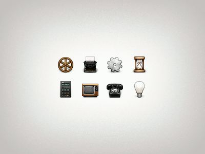
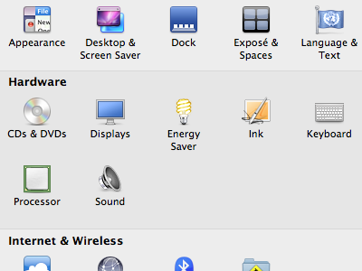
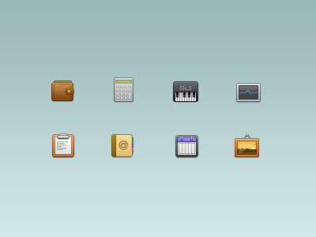
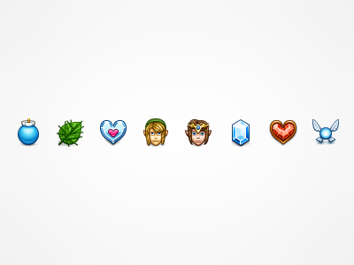
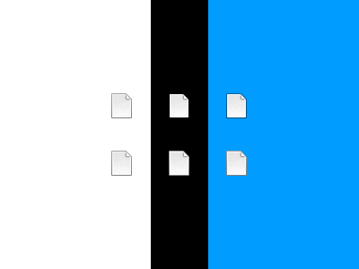

Creating 32px Icons
One of the tasks icon designers are often called upon to do is to create small, pixel-styled icons for toolbars, lists, feature guides, or simply as the smaller sizes of a larger, more realistic icon. Icons like this:
32px icons are one of the most common representatives of this style, but 16px, 24px, 48px, or even 128px are also drawn in this style at times. I will use 32px icons for the examples in this tutorial, but the same techniques apply to the other sizes mentioned.
Like many of the practices in icon design, this style is an evolved result of the constraints of the medium–that is to say, we use this style because it works well for small icons. Strong borders, clear shapes, and an attention to the pixel-by-pixel detail are what differentiate small icons like these from larger icons.
I'm going to go over the exact, point-by-point style for this type of icons, the methods to make them, and common mistakes to avoid.
The Style
The illustration style used in this size of icons is almost universally consistent. The same practices pop up in favicons, toolbar icons, sidebar icons: almost anywhere where space is limited and clarity is key. Let's look at some examples:
Some of Apple's, from System Preferences. Part of a set by 32px icon pro Pranav Pramod. A quick set of mine based on Legend of Zelda, made for this post.Based on these and other icons [there are plenty of good examples around the web], we can get a sense of what makes a good 32px-style icon. Here's a summary of how the style is set up:
- Lighting: The light source is located in the same position as it is for larger icons [Above the camera] but it is much softer, so that up-down gradients are effectively linear and shadows are extremely faint. There should never be any flat color fills in a 32px icon–every flat surface should have a gradient to it, however subtle.
- Fills: Colors are always pure and unmixed to enhance clarity. Most all materials are represented with the same shading style. The use of texture is extremely conservative; texture is only used when it is absolutely necessary to communicate the primary message of the icon.
- Border Colors: Visual contrast is maintained by using 1px borders, often including reflective bevels [1px inner highlights] at the upper edges. Borders should be about 40% darker than the fill color and at full saturation. They should be shaded slightly as well–space is at a premium, so any depth cues that can be added should be taken advantage of.
- Border Opacity: Borders should be semi-transparent, in the range of 50-90% opacity, so as to blend in well with different backgrounds. Since the border always needs to be darker than the fill, objects with extremely dark fills should have borders at near 100% opacity. Objects with extremely light colored fills should use dark, highly transparent borders, to avoid looking strange on dark backgrounds. Here's a comparison that shows this technique–a documents icon with a 50% opacity black border vs. an opaque grey one. You can see that the dark, low-opacity border adapts much better to different background colors. 
- Layout & Perspective: The perspective and orientation of elements are constrained to 90° angles whenever possible so as to maintain clarity on the square grid of pixels. Perspective, like texture, is only added when it is absolutely necessary to convey the message of the icon.
Setting Up Your Workspace:
A good workspace organization will make creating tiny icons much faster and easier. I use, and would recommend, something very much like this setup here.
{kind=link}
Some things to note about this setup:
- My icon is being drawn at twice the final resolution, using a 2px grid. This is extremely helpful, as it ensures that my final icon will look smooth and free of jags. It also takes off much of the stress about being "pixel-perfect"; I can be pretty messy in the full size while still getting a nice-looking final product.
- I am using a canvas with a generous amount of margins, and a small, toggleable black square to mark the final size. This is important because pixel icons frequently jam up against the edges of the canvas, so you need to have a margin when editing to get a sense of what your icon will look like in use. The black square is something I can toggle when I am drawing the paths, to make sure that I am not accidentally extending any elements beyond the final canvas dimensions.
- I have a separate, distraction free window showing the icon at 50%. This feature can be activated using
View>New Viewin GIMP, orWindow>Arrange>New Window of...in Photoshop. This keeps me from having to zoom in and out repeatedly while making edits.
Common Mistakes
Because the style and methods for creating these icons are so consistent, I often see the same mistakes showing up many times. Here are some of the things to avoid:
- Either forgetting the shadow, or putting in a shadow that is way too dark. This one is pretty common. Shadows are essential in making the icon feel "attached" to their backgrounds, and leaving them out makes your icons look like stickers. Putting in a shadow that is very dark is also to be avoided. The icon should be extremely transparent, and get most opaque at the points where it is near the object. Making a single shadow and copying and pasting for all of your icons won't work either, so don't try.
- Opaque borders. This makes icons look really bad against different backgrounds. Never do it unless it is necessary in order to keep the border darker than the fill color.
- Not centering the light source, using unecessary radial gradients, etc. Shading on this style of icons is, and should be, extremely simple 90% of the time. Occasional materials like metal will require more detail, but almost everything else can be achieved using linear gradients and a border + white inner shadow.
- Ugly desaturated colors. I see this often, especially when it comes to the borders–which should be at full saturation. The visual appeal of 32px icons relies on bright, attractive colors, so pay close attention to them. I will hopefully write more about techniques for getting beautiful, vivid colors in a future post–until then, just remember that soft light and overlay are your best friends.
- Blurry or jagged edges. The best way to fix this is to draw your icon at twice the final size, using a 2px grid, and then merge your layers and scale down. Aligning details to the pixel grid is extremely important to the quality of the icon, so spend time on it.
I hope this helps demystify some of the methods behind crisp, rich, adorable small icons.